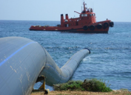

Captación de
Agua Marina
Sistema de captación de agua de mar desde la costa atlántica mediante pozo de playa o toma sumergida, con bomba de acero inoxidable y filtro colador para alimentar el proceso de desalinización.
Especificaciones del Sistema de Captación
Datos de diseño del sistema de toma de agua de mar para alimentar el proceso SWRO.
Configuración del Sistema
El sistema de captación se diseña para minimizar el arrastre de sedimentos y proteger la integridad de los equipos corriente abajo.
Pozo de Playa
Excavación en la arena de la playa a 3–5 m de profundidad. El agua de mar se filtra naturalmente a través del sustrato arenoso, reduciendo la carga de sólidos suspendidos y materia orgánica antes de la captación.
Toma Sumergida
Alternativa de captación directa desde el mar con canastilla sumergida anclada al lecho marino. Incluye rejilla de protección y sistema de anti-incrustantes para mantener el flujo constante.
Bomba y Tubería
Bomba centrífuga horizontal de acero inoxidable 316, tubería de PVC presión PN-10 de 1.5", válvula de pie con colador y válvula de retención para proteger el sistema contra golpe de ariete.
Mantenimiento
El sistema incluye accesos para limpieza periódica del colador, purga de aire en la línea de succión, y monitoreo de presión diferencial para detectar obstrucciones.
Diagrama de Captación
Esquema del sistema de captación desde la costa hasta la entrada del contenedor.

Pre-tratamiento
El agua captada pasa al sistema de pre-tratamiento con filtración por cartucho y ultrafiltración.
Ver Pre-tratamiento →